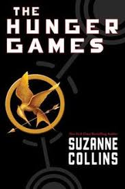

The Hunger Games series was written by Suzanne Collins in 2008.
The Hunger Games series is written in first person and takes place 100 years into the future.
The main characters throughout the series are Katniss Everdeen, Peeta Mellark, Gale Hawthorne, Haymitch, Effie Trinket, Cinna and President Snow.
The Hunger Games is an event held every year by the Capital that choose 2 children from each of the 12 districts to fight one another for the pleasure of the rich. Katniss's sister is chosen for the games, but Katniss steps in for her spot. Throughout the games she is trying to survive while making allegiances and enemies.
The Hunger Games shows the differences between the rich and the poor.

Divergent
The Divergent series was written by Veronica Roth in 2011.
The Divergent series is written in the first person view of Tris and is written in the present tense.
The main characters throughout the series are Beatrice (Tris) Prior, Tobias (Four) Eaton, Jeanie Matthews, Marcus Eaton and Caleb Prior.
The Divergent world is divided into factions. There are 5 different factions; Dauntless, Amity, Erudite, Abnegation, and Candor. Throughout the series, Tris is trying to learn what the right things to do are and if she chose the right faction for her, while she is a divergent along as her boyfriend.
The Divergent series shows the relationship between selflessness and bravery and also the importance of adulthood.